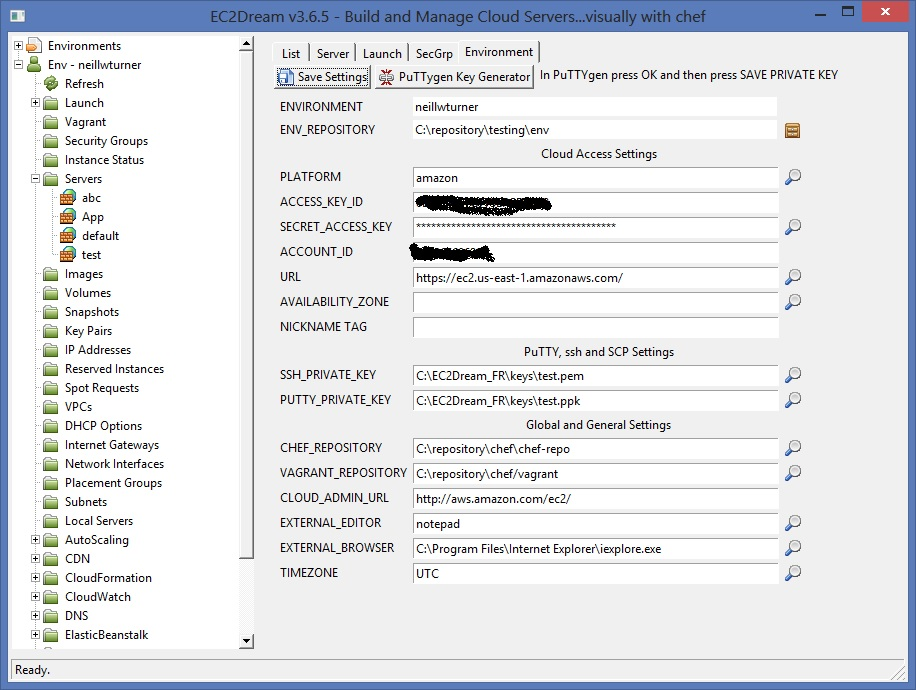
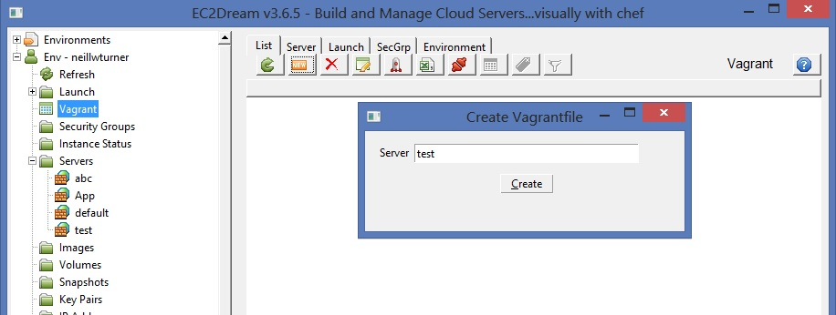
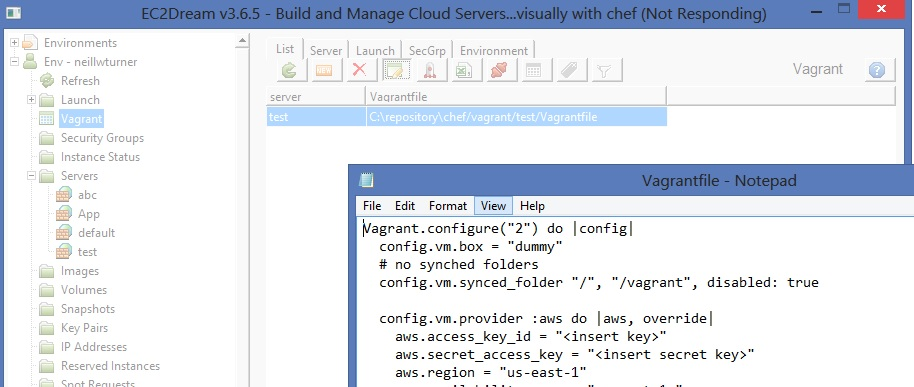
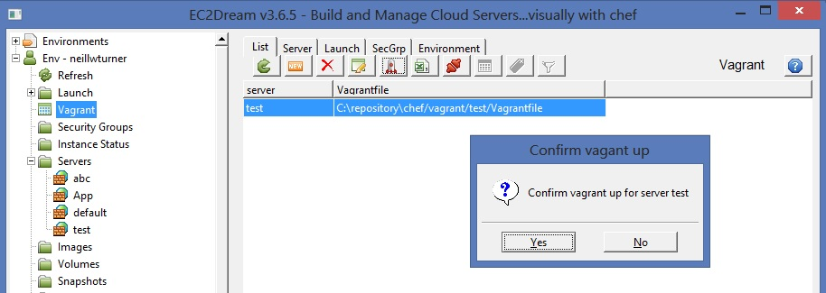

Using Vagrant
A good way to launch servers for testing is to use vagrant. Vagrant uses a file called Vagrantfile to hold the configuration and this can be stored in your repository and managed via version control. Vagrant supports running servers on your workstation as virtual machines as well as clouds like Amazon AWS. You can also specify provisioning and access the server via ssh.Install Vagrant
See Installing Vagrant and download and install vagrant for your workstation.For Amazon AWS also install the AWS plugin:
vagrant plugin install vagrant-aws
vagrant box add dummy https://github.com/mitchellh/vagrant-aws/raw/master/dummy.box --provider aws
There is also support for other clouds like Rackspace and you can download other boxes.
Define Server
1. In the Environment tab of EC2Dream set the Vagrant Repository
1. Select Vagrant from the EC2Dream Tree and press the new button

2. Edit the Vagrantfile by pressing the edit button

3. Start the server by pressing the up button

4. Destroy the server by pressing the destroy button